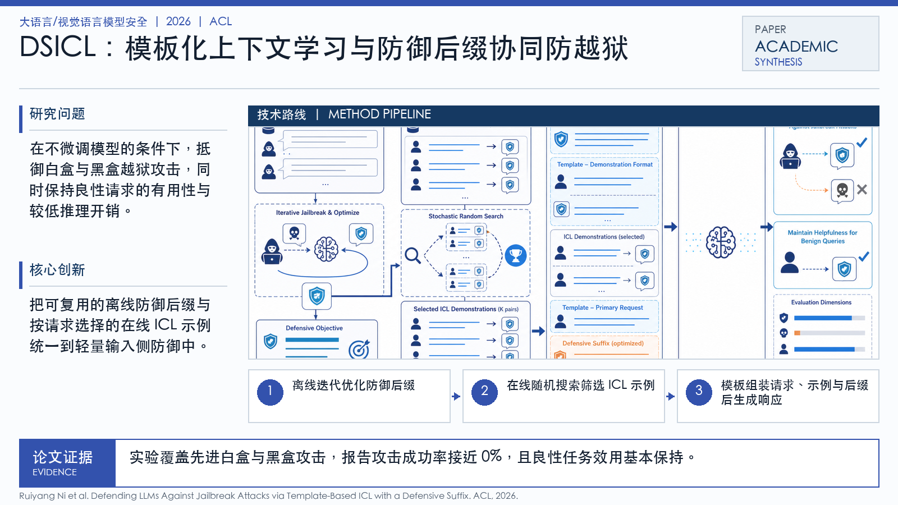

Problem
解决的问题
GCG、AutoDAN 等越狱攻击能诱导对齐后的 LLM 生成有害内容。已有防御常依赖微调或启发式提示，成本高、迁移性不稳定，且可能损害正常任务能力。
Research on LLMs and VLMs · 2026 · ACL
Defending LLMs Against Jailbreak Attacks via Template-Based ICL with a Defensive Suffix
Problem
GCG、AutoDAN 等越狱攻击能诱导对齐后的 LLM 生成有害内容。已有防御常依赖微调或启发式提示，成本高、迁移性不稳定，且可能损害正常任务能力。
Value
该方法适合展示 LLM 防御从“提示词经验”走向“可优化、可评测的提示模板机制”。

Technical Route
Innovation